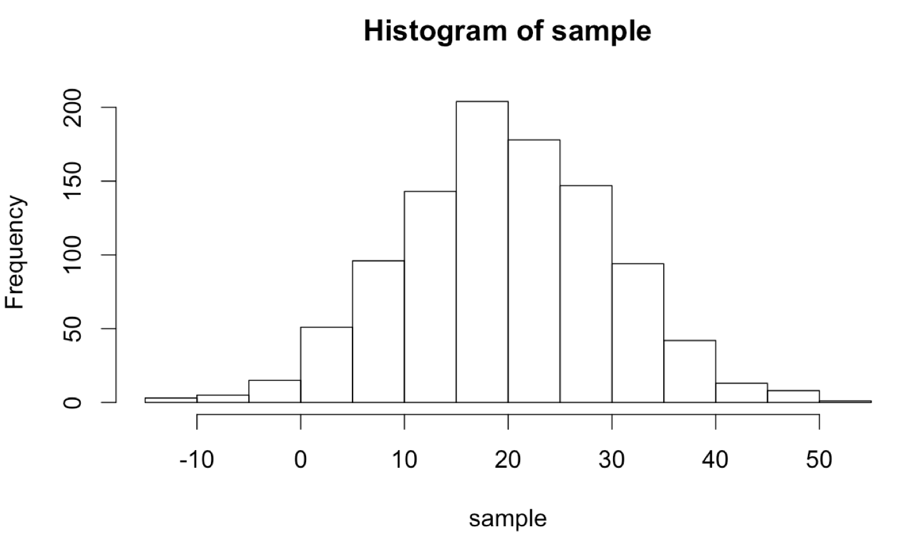
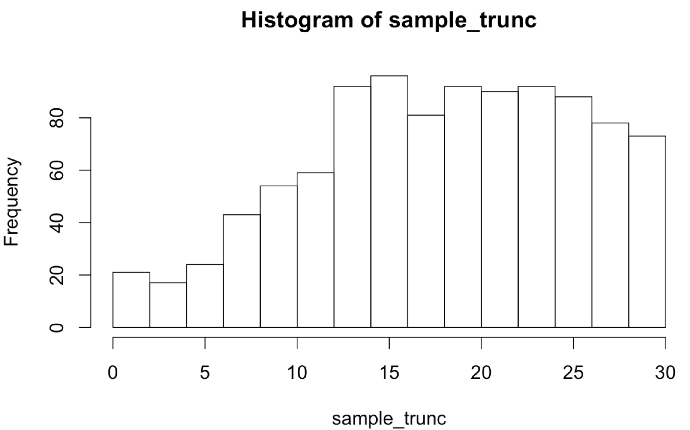
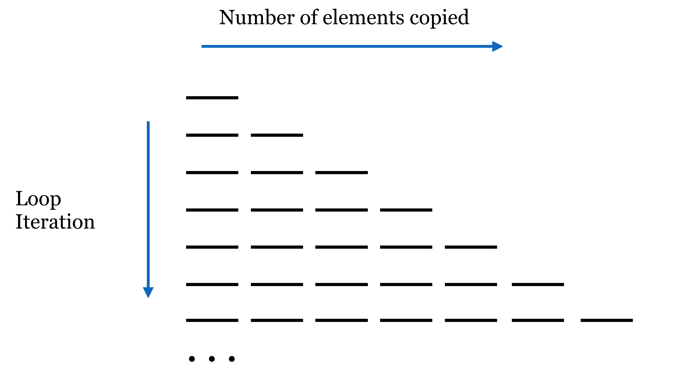
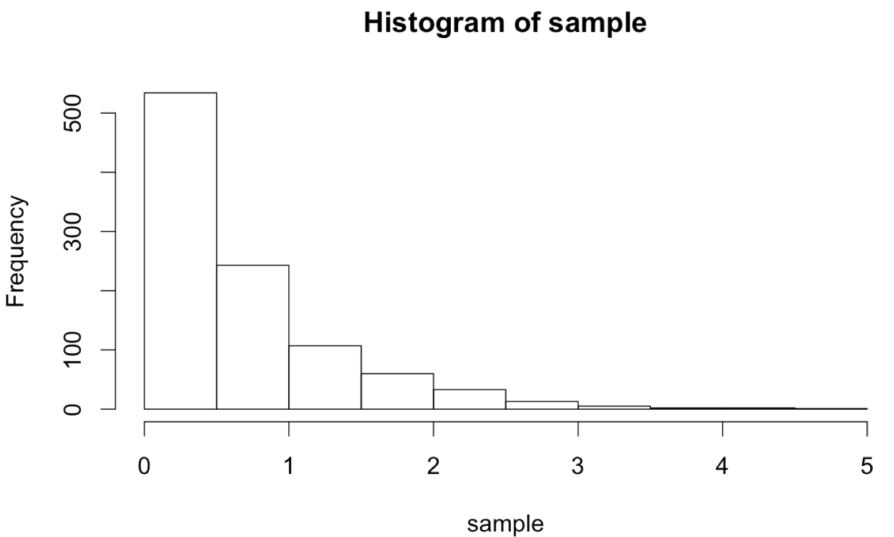
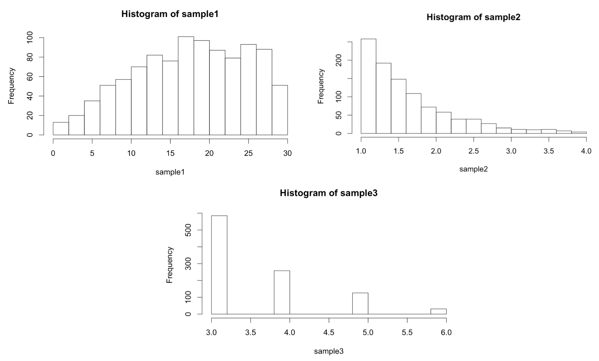

Chapter 38 Procedural Programming
For many (perhaps most) languages, control-flow structures like for-loops and if-statements are fundamental building blocks for writing useful programs. By contrast, in R, we can accomplish a lot by making use of vectorized operations, vector recycling, logical indexing, split-apply-combine, and so on. In general, R heavily emphasizes vectorized and functional operations, and these approaches should be used when possible; they are also usually optimized for speed. Still, R provides the standard repertoire of loops and conditional structures (which form the basis of the “procedural programming” paradigm) that can be used when other methods are clumsy or difficult to design. We’ve already seen functions, of course, which are incredibly important in the vast majority of programming languages.
Conditional Looping with While-Loops
A while-loop executes a block of code over and over again, testing a given condition (which should be or return a logical vector) before each execution. In R, blocks are delineated with a pair of curly brackets. Standard practice is to place the first opening bracket on the line, defining the loop and the closing bracket on a line by itself, with the enclosing block indented by two spaces.
count <- 1
while(count < 4) {
print("Count is: ")
print(count)
count <- count + 1
}
print("Done!")
In the execution of the above, when the while(count < 4) line is reached, count < 4 is run and returns the single-element logical vector TRUE, resulting in the block being run and printing "Count is: " and 1, and then incrementing count by 1. Then the loop returns to the check; count being 2 is still less than 4, so the printing happens and count is incremented again to 3. The loop starts over, the check is executed, output is printed, and count is incremented to 4. The loop returns back to the top, but this time count < 4 results in FALSE, so the block is skipped, and finally execution moves on to print "Done!".
[1] "Count is: "
[1] 1
[1] "Count is: "
[1] 2
[1] "Count is: "
[1] 3
[1] "Done!"
Because the check happens at the start, if count were to start at some larger number like 5, then the loop block would be skipped entirely and only "Done!" would be printed.
Because no “naked data” exist in R and vectors are the most basic unit, the logical check inside the while() works with a logical vector. In the above, that vector just happened to have only a single element. What if the comparison returned a longer vector? In that case, only the first element of the logical vector will be considered by the while(), and a warning will be issued to the effect of condition has length > 1. This can have some strange consequences. Consider if instead of count <- 1, we had count <- c(1, 100). Because of the vectorized nature of addition, the output would be:
[1] "Count is: "
[1] 1 100
[1] "Count is: "
[1] 2 101
[1] "Count is: "
[1] 3 102
Warning messages:
1: In while (count < 4) { :
the condition has length > 1 and only the first element will be used
2: In while (count < 4) { :
the condition has length > 1 and only the first element will be used
3: In while (count < 4) { :
the condition has length > 1 and only the first element will be used
4: In while (count < 4) { :
the condition has length > 1 and only the first element will be used
[1] "Done!"
Two handy functions can provide a measure of safety from such errors when used with simple conditionals: any() and all(). Given a logical vector, these functions return a single-element logical vector indicating whether any, or all, of the elements in the input vector are TRUE. Thus our while-loop conditional above might better be coded as while(any(count < 4)). (Can you tell the difference between this and while(any(count) < 4)?)
Generating Truncated Random Data, Part I
The unique statistical features of R can be combined with control-flow structures like while-loops in interesting ways. R excels at generating random data from a given distribution; for example, rnorm(1000, mean = 20, sd = 10) returns a 100-element numeric vector with values sampled from a normal distribution with mean 20 and standard deviation 10.
sample <- rnorm(1000, mean = 20, sd = 10)
hist(sample)
Although we’ll cover plotting in more detail later, the hist() function allows us to produce a basic histogram from a numeric vector. (Doing so requires a graphical interface like Rstudio for easily displaying the output. See chapter 40, “Plotting Data and ggplot2,” for details on plotting in R.)

What if we wanted to sample numbers originally from this distribution, but limited to the range 0 to 30? One way to do this is by “resampling” any values that fall outside of this range. This will effectively truncate the distribution at these values, producing a new distribution with altered mean and standard deviation. (These sorts of “truncated by resampling” distributions are sometimes needed for simulation purposes.)
Ideally, we’d like a function that encapsulates this idea, so we can say sample <- rnorm_trunc(0, 30, 1000, mean = 20, sd = 10). We’ll start by defining our function, and inside the function we’ll first produce an initial sample.
rnorm_trunc <- function(lower, upper, count, mean, sd) {
sample <- rnorm(count, mean = mean, sd = sd)
return(sample)
}
Note the usage of mean = mean in the call to rnorm(). The right-hand side refers to the parameter passed to the rnorm_trunc() function, the left-hand side refers to the parameter taken by rnorm(), and the interpreter has no problem with this usage.
Now, we’ll need to “fix” the sample so long as any of the values are less than lower or greater than upper. We’ll check as many times as needed using a while-loop.
rnorm_trunc <- function(lower, upper, count, mean, sd) {
sample <- rnorm(count, mean = mean, sd = sd)
while(any(sample < lower | sample > upper)) {
# fix the sample
}
return(sample)
}
If any values are outside the desired range, we don’t want to just try an entirely new sample set, because the probability of generating just the right sample (within the range) is incredibly small, and we’d be looping for quite a while. Rather, we’ll only resample those values that need it, by first generating a logical vector of “bad” elements. After that, we can generate a resample of the needed size and use selective replacement to replace the bad elements.
rnorm_trunc <- function(lower, upper, count, mean, sd) {
sample <- rnorm(count, mean = mean, sd = sd)
while(any(sample < lower | sample > upper)) {
# fix the sample
bad <- sample < lower | sample > upper # logical
bad_values <- sample[bad]
count_bad <- length(bad_values)
new_vals <- rnorm(count_bad, mean = mean, sd = sd)
sample[bad] <- new_vals
}
return(sample)
}
Let’s try it:
sample_trunc <- rnorm_trunc(0, 30, 1000, mean = 20, sd = 10)
hist(sample_trunc)
The plotted histogram reflects the truncated nature of the data set:

If-Statements
An if-statement executes a block of code based on a conditional (like a while-loop, but the block can only be executed once). Like the check for while, only the first element of a logical vector is checked, so using any() and all() is suggested for safety unless we are sure the comparison will result in a single-element logical vector.
# a single random number between 1 and 50
rand <- runif(1, min = 1, max = 50)
if(rand < 10) {
print("The random number is less than 10")
} else if(rand < 20) {
print("The random number is 10 or higher")
print("But it's also less than 20")
} else if(rand < 30) {
print("The random number is 20 or higher")
print("And it's less than 30")
} else {
print("The random number is 30 or higher")
}
Like if-statements in Python, each conditional is checked in turn. As soon as one evaluates to TRUE, that block is executed and all the rest are skipped. Only one block of an if/else chain will be executed, and perhaps none will be. The if-controlled block is required to start the chain, but one or more else if-controlled blocks and the final else-controlled block are optional.
In R, if we want to include one or more else if blocks or a single else block, the else if() or else keywords must appear on the same line as the previous closing curly bracket. This differs slightly from other languages and is a result of the way the R interpreter parses the code.
Generating Truncated Random Data, Part II
One of the issues with our rnorm_trunc() function is that if the desired range is small, it might still require many resampling efforts to produce a result. For example, calling sample_trunc <- rnorm_trunc(15, 15.01, 1000, 20, 10) will take a long time to finish, because it is rare to randomly generate values between 15 and 15.01 from the given distribution. Instead, what we might like is for the function to give up after some number of resamplings (say, 100,000) and return a vector containing NA, indicating a failed computation. Later, we can check the returned result with is.na().
rnorm_trunc <- function(lower, upper, count, mean, sd) {
sample <- rnorm(count, mean = mean, sd = sd)
looped <- 0
while(any(sample < lower | sample > upper)) {
# fix the sample
bad <- sample < lower | sample > upper # logical
bad_values <- sample[bad]
count_bad <- length(bad_values)
new_vals <- rnorm(count_bad, mean = mean, sd = sd)
sample[bad] <- new_vals
if(looped > 100000) {
return(NA)
}
looped <- looped + 1
}
return(sample)
}
sample_trunc <- rnorm_trunc(0, 30, 1000, mean = 20, sd = 10)
if(!is.na(sample_trunc)) {
hist(sample_trunc)
}
The example so far illustrates a few different things:
NAcan act as a placeholder in our own functions, much likemean()will returnNAif any of the input elements are themselvesNA.- If-statements may use
else ifandelse, but they don’t have to. - Functions may return from more than one point; when this happens, the function execution stops even if it’s inside of a loop.118
- Blocks of code, such as those used by while-loops, if-statements, and functions, may be nested. It’s important to increase the indentation level for all lines within each nested block; otherwise, the code would be difficult to read.
For-Loops
For-loops are the last control-flow structure we’ll study for R. Much like while-loops, they repeat a block of code. For-loops, however, repeat a block of code once for each element of a vector (or list), setting a given variable name to each element of the vector (or list) in turn.
ids <- c("CYP6B", "CATB", "AGP4")
for(id_el in ids) {
print("id_el is now: ")
print(id_el)
}
print("Done!")
[1] "id_el is now: "
[1] "CYP6B"
[1] "id_el is now: "
[1] "CATB"
[1] "id_el is now: "
[1] "AGP4"
[1] "Done!"
While for-loops are important in many other languages, they are not as crucial in R. The reason is that many operations are vectorized, and functions like lapply() and do() provide for repeated computation in an entirely different way.
There’s a bit of lore holding that for-loops are slower in R than in other languages. One way to determine whether this is true (and to what extent) is to write a quick loop that iterates one million times, perhaps printing on every 1,000th iteration. (We accomplish this by keeping a loop counter and using the modulus operator %% to check whether the remainder of counter divided by 1000 is 0.)
counter <- 1
for(i in seq(1, 1000000)) {
if(counter%%1000 == 0) {
print("Counter is now")
print(counter)
}
counter <- counter + 1
}
When we run this operation we find that, while not quite instantaneous, this loop doesn’t take long at all. Here’s a quick comparison measuring the time to execute similar code for a few different languages (without printing, which itself takes some time) on a 2013 MacBook Pro.
| Language | Loop 1 Million | Loop 100 Million |
|---|---|---|
| R (version 3.1) | 0.39 seconds | ~30 seconds |
| Python (version 3.2) | 0.16 seconds | ~12 seconds |
| Perl (version 5.16) | 0.14 seconds | ~13 seconds |
| C (g++ version 4.2.1) | 0.0006 seconds | 0.2 seconds |
While R is the slowest of the bunch, it is “merely” twice as slow as the other interpreted languages, Python and Perl.
The trouble with R is not that for-loops are slow, but that one of the most common uses for them — iteratively lengthening a vector with c() or a data frame with rbind() — is very slow. If we wanted to illustrate this problem, we could modify the loop above such that, instead of adding one to counter, we increase the length of the counter vector by one with counter <- c(counter, 1). We’ll also modify the printing to reflect the interest in the length of the counter vector rather than its contents.
counter <- 1
for(i in seq(1, 1000000)) {
if(length(counter)%%1000 == 0) {
print("Length of counter is now")
print(length(counter))
}
counter <- c(counter, 1)
}
In this case, we find that the loop starts just as fast as before, but as the counter vector gets longer, the time between printouts grows. And it continues to grow and grow, because the time it takes to do a single iteration of the loop is depending on the length of the counter vector (which is growing).
To understand why this is the case, we have to inspect the line counter <- c(counter, 1), which appends a new element to the counter vector. Let’s consider a related set of lines, wherein two vectors are concatenated to produce a third.
first_names <- c("Joseph", "Robert")
last_names <- c("Anderson", "Wilson")
names <- c(first_names, last_names)
print(names) # [1] "Joseph" "Robert" "Anderson" "Wilson"
print(first_names) # [1] "Joseph" "Robert"
print(last_names) # [1] "Anderson" "Wilson"
In the above, names will be the expected four-element vector, but the first_names and last_names have not been removed or altered by this operation — they persist and can still be printed or otherwise accessed later. In order to remove or alter items, the R interpreter copies information from each smaller vector into a new vector that is associated with the variable names.
Now, we can return to counter <- c(counter, 1). The right-hand side copies information from both inputs to produce a new vector; this is then assigned to the variable counter. It makes little difference to the interpreter that the variable name is being reused and the original vector will no longer be accessible: the c() function (almost) always creates a new vector in RAM. The amount of time it takes to do this copying thus grows along with the length of the counter vector.

The total amount of time taken to append n elements to a vector in a for-loop this way is roughly \(n^2/2\), meaning the time taken to grow a list of n elements grows quadratically in its final length! This problem is exacerbated when using rbind() inside of a for-loop to grow a data frame row by row (as in something like df <- rbind(df, c(val1, val2, val3))), as data frame columns are usually vectors, making rbind() a repeated application of c().
One solution to this problem in R is to “preallocate” a vector (or data frame) of the appropriate size, and use replacement to assign to the elements in order using a carefully constructed loop.
# pre-allocate a counter vector of length 1 million
counter <- rep(0, 1000000)
for(i in seq(1, 1000000)) {
counter[i] <- 1
}
(Here we’re simply placing values of 1 into the vector, but more sophisticated examples are certainly possible.) This code runs much faster but has the downside of requiring that the programmer know in advance how large the data set will need to be.119
Does this mean we should never use loops in R? Certainly not! Sometimes looping is a natural fit for a problem, especially when it doesn’t involve dynamically growing a vector, list, or data frame.
Exercises
Using a for-loop and a preallocated vector, generate a vector of the first 100 Fibonacci numbers, 1, 1, 2, 3, 5, 8, and so on (the first two Fibonacci numbers are 1; otherwise, each is the sum of the previous two).
A line like
result <- readline(prompt = "What is your name?")will prompt the user to enter their name, and store the result as a character vector inresult. Using this, a while-loop, and an if-statement, we can create a simple number-guessing game.Start by setting
input <- 0andrandto a random integer between 1 and 100 withrand <- sample(seq(1,100), size = 1). Next, whileinput != rand: Read a guess from the user and convert it to an integer, storing the result ininput. Ifinput < rand, print"Higher!", otherwise ifinput > rand, print"Lower!", and otherwise report"You got it!".
A paired student’s t-test assesses whether two vectors reveal a significant mean element-wise difference. For example, we might have a list of student scores before a training session and after.
scores <- c(50, 35, 56, 36, 90) scores_after <- c(70, 45, 50, 42, 91) improvement_test <- t.test(scores, scores_after, paired = TRUE) print(improvement_test)But the paired t-test should only be used when the differences (which in this case could be computed with
scores_after - scores) are normally distributed. If they aren’t, a better test is the Wilcoxon signed-rank test:improvement_test <- wilcox.test(scores, scores_after, paired = TRUE) print(improvement_test)(While the t-test checks to determine whether the mean difference is significantly different from
0, the Wilcoxon signed-rank test checks to determine whether the median difference is significantly different from0.)The process of determining whether data are normally distributed is not an easy one. But a function known as the Shapiro test is available in R, and it tests the null hypothesis that a numeric vector is not normally distributed. Thus the p value is small when data are not normal. The downside to a Shapiro test is that it and similar tests tend to be oversensitive to non-normality when given large samples. The
shapiro.test()function can be explored by runningprint(shapiro.test(rnorm(100, mean = 10, sd = 4)))andprint(shapiro.test(rexp(100, rate = 2.0))).Write a function called
wilcox_or_ttest()that takes two equal-length numeric vectors as parameters and returns a p value. If theshapiro.test()reports a p value of less than 0.05 on the difference of the vectors, the returned p value should be the result of a Wilcoxon rank-signed test. Otherwise, the returned p value should be the result of at.test(). The function should also print information about which test is being run. Test your function with random data generated fromrexp()andrnorm().
A Functional Extension
Having reviewed the procedural control-flow structures if, while, and for, let’s expand on our truncated random sampling example to explore more “functional” features of R and how they might be used. The function we designed, rnorm_trunc(), returns a random sample that is normally distributed but limited to a given range via resampling. The original sampling distribution is specified by the mean = and sd = parameters, which are passed to the call to rnorm() within rnorm_trunc().
rnorm_trunc <- function(lower, upper, count, mean, sd) {
sample <- rnorm(count, mean = mean, sd = sd)
looped <- 0
while(any(sample < lower | sample > upper)) {
# fix the sample
bad <- sample < lower | sample > upper # logical
bad_values <- sample[bad]
count_bad <- length(bad_values)
new_vals <- rnorm(count_bad, mean = mean, sd = sd)
sample[bad] <- new_vals
if(looped > 100000) {
return(NA)
}
looped <- looped + 1
}
return(sample)
}
What if we wanted to do the same thing, but for rexp(), which samples from an exponential distribution taking a rate = parameter?
sample <- rexp(1000, rate = 1.5)
hist(sample)
The distribution normally ranges from 0 to infinity, but we might want to resample to, say, 1 to 4.

One possibility would be to write an rexp_trunc() function that operates similarly to the rnorm_trunc() function, with changes specific for sampling from the exponential distribution.
rexp_trunc <- function(lower, upper, count, rate) {
sample <- rexp(count, rate = rate)
looped <- 0
while(any(sample < lower | sample > upper)) {
# fix the sample
bad <- sample < lower | sample > upper # logical
bad_values <- sample[bad]
count_bad <- length(bad_values)
new_vals <- rexp(count_bad, rate = rate)
sample[bad] <- new_vals
if(looped > 100000) {
return(NA)
}
looped <- looped + 1
}
return(sample)
}
The two functions rnorm_trunc() and rexp_trunc() are incredibly similar — they differ only in the sampling function used and the parameters passed to them. Can we write a single function to do both jobs? We can, if we remember two important facts we’ve learned about functions and parameters in R.
- Functions like
rnorm()andrexp()are a type of data like any other and so can be passed as parameters to other functions (as in the split-apply-combine strategy). - The special parameter
...“collects” parameters so that functions can take arbitrary parameters.
Here, we’ll use ... to collect an arbitrary set of parameters and pass them on to internal function calls. When defining a function to take ..., it is usually specified last. So, we’ll write a function called sample_trunc() that takes five parameters:
- The lower limit,
lower. - The upper limit,
upper. - The sample size to generate,
count. - The function to call to generate samples,
sample_func. - Additional parameters to pass on to
sample_func,....
sample_trunc <- function(lower, upper, count, sample_func, ...) {
sample <- sample_func(count, ...)
looped <- 0
while(any(sample < lower | sample > upper)) {
# fix the sample
bad <- sample < lower | sample > upper # logical
bad_values <- sample[bad]
count_bad <- length(bad_values)
new_vals <- sample_func(count_bad, ...)
sample[bad] <- new_vals
if(looped > 100000) {
return(NA)
}
looped <- looped + 1
}
return(sample)
}
We can call our sample_trunc() function using any number of sampling functions. We’ve seen rnorm(), which takes mean = and sd = parameters, and rexp(), which takes a rate = parameter, but there are many others, like dpois(), which generates Poisson distributions and takes a lambda = parameter.
sample1 <- sample_trunc(0, 30, 1000, rnorm, mean = 20, sd = 10)
sample2 <- sample_trunc(1, 4, 1000, rexp, rate = 1.5)
sample3 <- sample_trunc(3, 6, 1000, rpois, lambda = 2)
if(!is.na(sample1)) {
hist(sample1)
}
if(!is.na(sample2)) {
hist(sample2)
}
if(!is.na(sample3)) {
hist(sample3)
}
In the first example above, mean = 20, sd = 10 is collated into ... in the call to sample_trunc(), as is rate = 1.5 in the second example and lambda = 2 in the third example.

Exercises
As discussed in a previous exercise, the
t.test()andwilcox.test()functions both take two numeric vectors as their first parameters, and return a list with a$p.valueentry. Write a functionpval_from_test()that takes four parameters: the first two should be two numeric vectors (as in thet.test()andwilcox.test()functions), the third should be a test function (eithert.testorwilcox.test), and the fourth should be any optional parameters to pass on (...). It should return the p value of the test run.We should then be able to run the test like so:
sample1 <- rnorm(20, mean = 10, sd = 3) sample2 <- rnorm(20, mean = 20, sd = 3)
The four values `pval1`, `pval2`, `pval3`, and `pval4` should contain simple *p* values.Some programmers believe that functions should have only one return point, and it should always go at the end of a function. This can be accomplished by initializing the variable to return at the start of the function, modifying it as needed in the body, and finally returning at the end. This pattern is more difficult to implement in this type of function, though, where execution of the function needs to be broken out of from a loop.↩︎
Another way to lengthen a vector or list in R is to assign to the index just off of the end of it, as in
counter[length(counter) + 1] <- val. One might be tempted to use such a construction in a for-loop, thinking that the result will be thecountervector being modified “in place” and avoiding the expensive copying. One would be wrong, at least as of the time of this writing, because this line is actually syntactic sugar for a function call and assignment:counter <- `[<-`(counter, length(counter) + 1, val), which suffers the same problem as thec()function call.↩︎